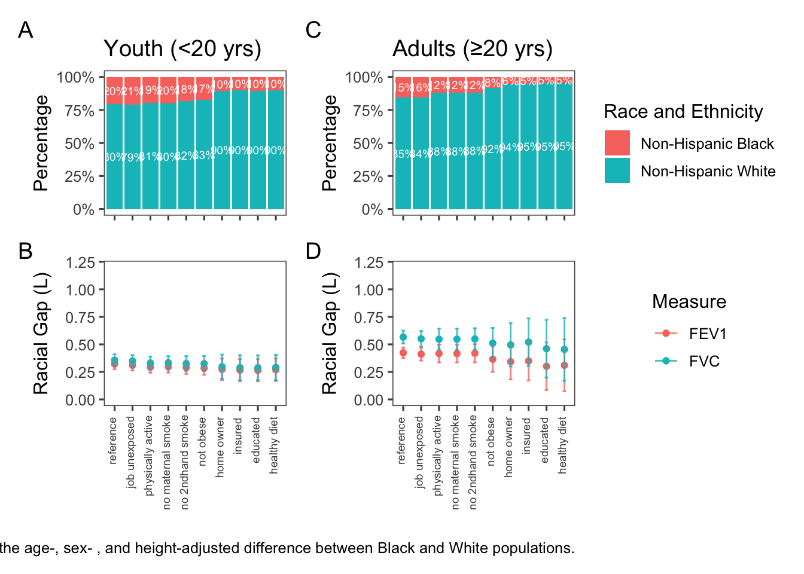
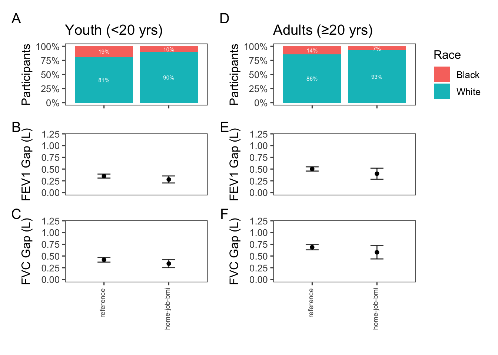
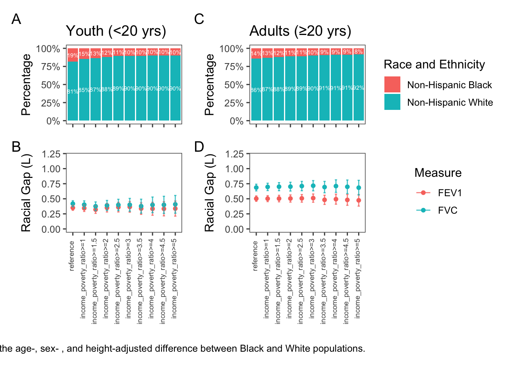
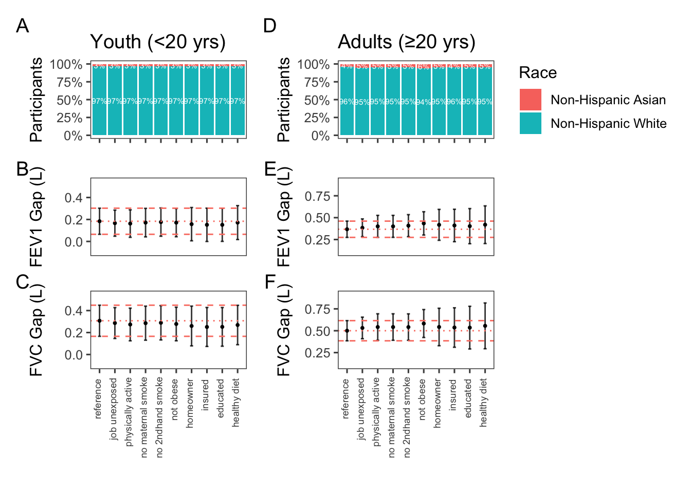

![]()
| Adults (N=7533) |
Youth (N=2924) |
Overall (N=10457) |
|
|---|---|---|---|
| age | |||
| Mean (SD) | 47.4 (16.4) | 12.5 (3.93) | 37.6 (21.0) |
| Median [Min, Max] | 47.0 [20.0, 79.0] | 12.0 [6.00, 19.0] | 37.0 [6.00, 79.0] |
| race_text_nhanes | |||
| Non-Hispanic Black | 2420 (32.1%) | 1311 (44.8%) | 3731 (35.7%) |
| Non-Hispanic White | 5113 (67.9%) | 1613 (55.2%) | 6726 (64.3%) |
| sex_text | |||
| Female | 3864 (51.3%) | 1450 (49.6%) | 5314 (50.8%) |
| Male | 3669 (48.7%) | 1474 (50.4%) | 5143 (49.2%) |
| smoker | |||
| Yes | 3817 (50.7%) | 164 (5.6%) | 3981 (38.1%) |
| No | 3716 (49.3%) | 2760 (94.4%) | 6476 (61.9%) |
| resp_dx | |||
| Yes | 1469 (19.5%) | 625 (21.4%) | 2094 (20.0%) |
| No | 6064 (80.5%) | 2299 (78.6%) | 8363 (80.0%) |
| resp_symptoms | |||
| Yes | 1708 (22.7%) | 434 (14.8%) | 2142 (20.5%) |
| No | 5825 (77.3%) | 2490 (85.2%) | 8315 (79.5%) |
| physically_active | |||
| Yes | 5445 (72.3%) | 2686 (91.9%) | 8131 (77.8%) |
| No | 2088 (27.7%) | 238 (8.1%) | 2326 (22.2%) |
| occupational_exposure | |||
| Yes | 4046 (53.7%) | 214 (7.3%) | 4260 (40.7%) |
| No | 3487 (46.3%) | 2710 (92.7%) | 6197 (59.3%) |
| income_poverty_ratio | |||
| Mean (SD) | 2.76 (1.68) | 2.27 (1.63) | 2.63 (1.68) |
| Median [Min, Max] | 2.51 [0, 5.00] | 1.79 [0, 5.00] | 2.31 [0, 5.00] |
| Missing | 486 (6.5%) | 168 (5.7%) | 654 (6.3%) |
| home_owner | |||
| Yes | 4963 (65.9%) | 1667 (57.0%) | 6630 (63.4%) |
| No | 2570 (34.1%) | 1257 (43.0%) | 3827 (36.6%) |
| bmi | |||
| Mean (SD) | 29.4 (7.06) | 21.8 (6.13) | 27.3 (7.62) |
| Median [Min, Max] | 28.3 [13.2, 84.9] | 20.5 [12.5, 57.1] | 26.3 [12.5, 84.9] |
| Missing | 34 (0.5%) | 23 (0.8%) | 57 (0.5%) |
| maternal_smoke | |||
| Mean (SD) | NA (NA) | 1.93 (0.942) | 1.93 (0.942) |
| Median [Min, Max] | NA [NA, NA] | 2.00 [1.00, 9.00] | 2.00 [1.00, 9.00] |
| Missing | 7533 (100%) | 818 (28.0%) | 8351 (79.9%) |
| smoker_in_household | |||
| Mean (SD) | 1.79 (0.418) | 1.80 (0.397) | 1.80 (0.413) |
| Median [Min, Max] | 2.00 [1.00, 9.00] | 2.00 [1.00, 2.00] | 2.00 [1.00, 9.00] |
| Missing | 23 (0.3%) | 12 (0.4%) | 35 (0.3%) |
| education_adults | |||
| 1 | 231 (3.1%) | 0 (0%) | 231 (2.2%) |
| 2 | 1047 (13.9%) | 0 (0%) | 1047 (10.0%) |
| 3 | 1869 (24.8%) | 0 (0%) | 1869 (17.9%) |
| 4 | 2455 (32.6%) | 0 (0%) | 2455 (23.5%) |
| 5 | 1928 (25.6%) | 0 (0%) | 1928 (18.4%) |
| 7 | 2 (0.0%) | 0 (0%) | 2 (0.0%) |
| 9 | 1 (0.0%) | 0 (0%) | 1 (0.0%) |
| Missing | 0 (0%) | 2924 (100%) | 2924 (28.0%) |
| now_attending_school | |||
| Mean (SD) | NA (NA) | 1.34 (0.582) | 1.34 (0.582) |
| Median [Min, Max] | NA [NA, NA] | 1.00 [1.00, 3.00] | 1.00 [1.00, 3.00] |
| Missing | 7533 (100%) | 1057 (36.1%) | 8590 (82.1%) |
| healthy_eater | |||
| Yes | 5522 (73.3%) | 2688 (91.9%) | 8210 (78.5%) |
| No | 2011 (26.7%) | 236 (8.1%) | 2247 (21.5%) |
| fev1 | |||
| Mean (SD) | 3.07 (0.920) | 2.68 (1.04) | 2.96 (0.971) |
| Median [Min, Max] | 3.01 [0.476, 6.92] | 2.55 [0.816, 6.14] | 2.91 [0.476, 6.92] |
| fvc | |||
| Mean (SD) | 3.97 (1.11) | 3.15 (1.24) | 3.74 (1.20) |
| Median [Min, Max] | 3.88 [1.10, 8.08] | 3.00 [1.01, 7.21] | 3.69 [1.01, 8.08] |
Who Is Healthy Anyways
Abstract
RATIONALE: Racialized populations disproportionately experience exposures that impair lung function. Race-neutral reference equations mitigate bias due to disparities at the cost of reduced precision. However, it is unclear what proportion of racial gaps in lung function is due to known disparities. We hypothesized that measurable disparities will help explain racial gaps in lung function.
METHODS: We defined reference populations from 18,359 Black and White NHANES 2007-2012 participants. Starting with non-smokers without respiratory symptoms or diagnoses, we sequentially excluded those with occupational exposure to dust/fumes, maternal tobacco use, second-hand smoke exposure,obesity, low physical activity, unhealthy diet, self-assessed poor health, and home ownership. Across populations, we compared average age-, sex-, and height-adjusted differences in FEV1 and FVC between Black and White adults (≥20) and youth (<20).
RESULTS: From the base reference population to the most restrictive, the percentage of Black participants decreased from 20% to 16% in youth and 14% to 7% in adults. The racial gap in lung function was reduced from 0.40 L (95%CI 0.36-0.43) to 0.31 L (95%CI 0.26-0.36) in FEV1 and from 0.48 L (95%CI 0.44-0.51) to 0.36 (95%CI 0.30-0.42) in FVC in youth but increased in adults.
CONCLUSIONS: The disparities investigated herein explain up to 25% of the racial gap in lung function among American youth. Further research on adults is required.
Background
Racial gaps in measures of lung function have been known since late 18th century. For more than a hundred years, pro-slavery scientists in the US weaponized the lower observed lung function in Black people to argue that Black bodies were inferior and justify White supremacy [1]. This scientifically racist view was eventually replaced with the notion of innate but benign racial differences in lung function, likely attributable to anthropometric differences. In the twentieth century and with the growing adoption of pre-employment spirometry as a test of fitness for workers, occupation standards in the US proposed race-based adjustment of spirometry results to prevent hiring discrimination against Black people [2]. In 2005, the American Thoracic Society (ATS) and the European Respiratory Society (ERS) started recommending race-specific reference equations for interpreting pulmonary function tests [3]. In the past two decades, race-based lung function reference values have been widely used to guide diagnosis, severity grading, and management of lung diseases, decide priority for lung transplant surgery, as a fitness for employment eligibility in some industries, and to monitor occupational health and adjudicate insurance claims.
In recent years, increased awareness of the history of structural racism and disparities affecting racialized populations has led to calls to revisit race-based equations in medicine [4]. Of note is the growing body of literature suggests that racialized populations experience a disproportionate level of harmful environmental exposures that might hinder lung growth and lower lung function [5].
Spirometry reference equations are developed with data from from “healthy” volunteers, who do not smoke, are asymptomatic, and have not been diagnosed with lung diseases [6, 7]. This rather loose definition of what constitutes as healthy could potentially lead to a biased reference populations in which White volunteers have higher lung function values, simply because they were less likely to have been exposed to environmental and social factors that diminish lung function.
However, it is unclear what proportion of the observed racial gaps in lung function is due to social determinants of health. Previous studies on adults have attributed 35-39% of the racial gap in lung function to sitting height, 2.5-7.5% to poverty, and 2-4.7% to education [8]. In children, sitting height accounted for 42-53% of the racial gap, while diet and socio-economic stsstus accounted for 7-10% of the racial differences [9].
We hypothesized that disproportionate exposures explain a larger proportion of racial gaps in lung function than previously reported.
Methods
We used data from three cycles of the US National Health and Nutrition Examination Survey (NHANES) 2007-2012 to define 10 increasingly healthier reference populations. We included self-identified Black and White individuals with valid height and high-quality spirometry. Starting from the base reference population of non-smokers with no diagnoses of lung diseases or respiratory symptoms, we sequentially excluded those with occupational exposures, physical inactivity, maternal smoking, obesity, no home ownership, no insurance, lower education, and unhealthy diet.
For each reference population, the racial gap was calculated as the average difference between Black and White populations adjusted by age, height, and sex in a linear regression. We evaluated the reduction in the racial gap separately for youth (<20 yrs) and adults (≥20 yrs). The distinction between adults and youth was made based on how NHANES data is structured; for example, the educational level variable is only available for those 20 years of age and older.
In the main analysis, we interpreted missing variables permissively and did not excluded anyone based on a missing variable. For example, if someone’s smoking status was unknown, we did not exclude them when excluding smokers. This choice was motivated by statistical efficiency of having a larger number of persons in each consecutive reference population. In the sensitivity analyses, we explored the effects of this value judgment, but conducting analyses with alternative assumptions. We also evaluated the proportion of the racial gap in lung function that can be explained by poverty by assessing the effects of sequentially restricting the reference population to those with income-to-poverty ratios of equal or larger than 1, 1.5, 2, 2.5, up to 5.
In the sensitivity analyses, we evaluated the results separately for males and females, those born outside of the U.S. versus those who were born in the U.S., and other groups of self-identified race and ethnicity.
Results
Of the 18,359 self-identified Black and White participants in NHANES 2007-2012, 10,457 participants had valid height and high quality spirometry. This included 7,533 adults and 2,924 youth. Characteristics of participants is summarized in Table 1 .
From the base reference population to the most restrictive, the proportion of Black participants decreased from 19% to 9% in youth and 14% to 4% in adults, as shown in Figure 1. After excluding those with various social and environmental exposures, the racial gap in FEV1 and FVC was reduced by 26% and 19% in adults, and 25% and 26% in youth.

Biological Sex
We also looked at the racial gap in lung function from the most permissive to the most restrictive reference population, separately for females and males. In females, the proportion of Black participants decreased from 20% to 10% in youth and 15% to 5% in adults. After excluding those with various social and environmental exposures, the racial gap in FEV1 and FVC was reduced by 27% and 20% in adults, and 16% and 19% in youth, as shown in Figure 2. In males, the proportion of Black participants decreased from 17% to 8% in youth and 12% to 4% in adults. After excluding those with various social and environmental exposures, the racial gap in FEV1 and FVC was reduced by 14% and 8% in adults, and 35% and 34% in youth, as shown in Figure 3.


Home Ownership, BMI, and Occupation
After excluding patients solely based on home ownership, BMI, and occupation, the proportion of Black participants decreased from 19% to 10% in youth and 14% to 11% in adults, as shown in Figure 4. After excluding those with various social and environmental exposures, the racial gap in FEV1 and FVC was reduced by 20% and 16% in adults, and 21% and 19% in youth.

Income to Poverty Ratio
When we excluded participants with income to poverty ratio under five, the proportion of Black participants decreased from 19% to 10% in youth and 14% to 8% in adults, as shown in Figure 5. The proportion of racial gap in FEV1 and FVC that was explained by poverty was 6% and 0% in adults, and 4% and 2% in youth.

In the supplementary material, we also explored the intersection of self-identified race and country of origin.
Discussion
The effects of social determinants of health on lung function, these have been discussed in the literature for decades. The 1991 official statements of the ATS on lung function testing discussed the effects of environmental factors, smoking, indoor and outdoor air pollution, occupational exposures, built environment and socio-economic factors as one of the main sources of variability in lung function[10]. A 1986 review of between-individual variation in FVC attributed up to 30% of variation to biological sex, up to 30% to age, height, and weight, 10% to race, 3% to measurement error, and 27% to unexplained factors[11]. Our study focuses on the proportion of variability that was historically attributed to race can be explained by social determinants of health.
Our study underscores the significant influence of social determinants of health on lung function. Our results suggest that a substantial portion of the racial gap in lung function can be explained by SDoH, with up to 26% of the gap in adults, and as much as 35% in males under 20 years of age, attributed to these factors. These findings are in line with previous research that highlights the critical role of environmental, socio-economic, and lifestyle factors in shaping health outcomes
The higher explained proportion of the racial gap in lung function among Black individuals born in the US (i.e., up to 36% of the racial gap in adult FEV1 explained by the studied exposures) suggests that systemic factors such as racism, segregation, red-zoning, and other socio-economic inequities profoundly impact lung health. This aligns with the growing body of literature that implicates historical and structural inequities, such as redlining and differential environmental exposures, in perpetuating health disparities among racialized communities
Our analysis revealed that excluding individuals based on home ownership, BMI, and occupational exposures accounts for a significant portion of the explainable racial gap, indicating that financial stability, physical health, and work-related factors are pivotal contributors to lung function disparities. These findings suggest that interventions aimed at reducing socio-economic inequities could potentially mitigate a significant portion of racial gaps in lung function.
Our study highlights the necessity for further research to comprehensively understand the interplay between SDoH, environmental exposures, and lung function across different populations. Future studies should aim to incorporate a wider array of SDoH, such as stress levels, access to healthcare, neighborhood safety, and intergenerational wealth effects. There is also a need for longitudinal studies that can elucidate causal pathways and the potential impact of policy changes on reducing health disparities.
Moreover, exploring the intersectionality of race, gender identity, and other demographic factors could provide a more nuanced understanding of how diverse identities influence lung health outcomes. Expanding research to include international cohorts could enhance the generalizability of findings and support the development of global strategies to address lung health disparities.
While our study provides valuable insights, certain limitations must be acknowledged. Our reliance on NHANES data restricts generalizability beyond the United States and hinders our ability to explore nuanced race and ethnicity groups. The available data also limits our assessment of various SDoH and environmental exposures, such as intergenerational wealth effects and life-course exposure to pollutants. Additionally, the absence of data on gender identity prevented us from analyzing potential differential effects.
These findings have important implications for clinical practice and policy. Our results show a larger than previously known effect of complex exposures on racial gaps in lung function, and the true proportion is likely higher than our estimates. However, the racial gaps in lung function cannot yet be completely explained by disparities in complex exposures. The previous guidelines that recommended race-specific reference equations for pulmonary function testing risk assumed racial gaps in lung function were normal and reinforced inequities by perpetuating the notion of race as a biological determinant, rather than acknowledging the role of modifiable social factors. However, the new race-averaged reference equations also fail to account for our understanding of the the effect size of social and environmental exposures on lung function.
Policymakers should consider strategies to reduce exposure to harmful environmental conditions, improve access to healthcare and education, and address occupational health disparities. Implementing policies that prioritize community-level interventions to enhance air quality, housing, and economic opportunities could play a crucial role in bridging these gaps.
Conclusions
Our study shows that a larger proportion of racial gaps in lung function can be explained by social determinants of health than previously reported. However, we were unable to account for all racial differences in lung function based on measured social determinants of health in NHANES.
References
1
Braun L, Grisson R. Race, Lung Function, and the Historical Context of Prediction Equations. JAMA Network Open [Internet] 2023; 6: e2316128. Available from: http://dx.doi.org/10.1001/jamanetworkopen.2023.16128.
2
Townsend MC, Cowl CT. U.S. Occupational Historical Perspective on Race and Lung Function. American Journal of Respiratory and Critical Care Medicine [Internet] 2022; 206: 789–790. Available from: http://dx.doi.org/10.1164/rccm.202203-0565le.
3
Pellegrino R. Interpretative strategies for lung function tests. European Respiratory Journal [Internet] 2005; 26: 948–968. Available from: http://dx.doi.org/10.1183/09031936.05.00035205.
4
Vyas DA, Eisenstein LG, Jones DS. Hidden in Plain Sight Reconsidering the Use of Race Correction in Clinical Algorithms. Malina D, ed. New England Journal of Medicine [Internet] 2020; 383: 874–882. Available from: http://dx.doi.org/10.1056/NEJMms2004740.
5
Marciniuk DD, Becker EA, Kaminsky DA, et al. Effect of Race and Ethnicity on Pulmonary Function Testing Interpretation. CHEST [Internet] 2023; 164: 461–475. Available from: http://dx.doi.org/10.1016/j.chest.2023.03.026.
6
Quanjer PH, Stanojevic S, Cole TJ, et al. Multi-ethnic reference values for spirometry for the 395-yr age range: the global lung function 2012 equations. European Respiratory Journal [Internet] 2012; 40: 1324–1343. Available from: http://dx.doi.org/10.1183/09031936.00080312.
7
Bowerman C, Bhakta NR, Brazzale D, et al. A Race-neutral Approach to the Interpretation of Lung Function Measurements. American Journal of Respiratory and Critical Care Medicine [Internet] 2023; 207: 768–774. Available from: http://dx.doi.org/10.1164/rccm.202205-0963OC.
8
HARIK-KHAN RAIDAI, FLEG JEROMEL, MULLER DENISC, et al. The Effect of Anthropometric and Socioeconomic Factors on the Racial Difference in Lung Function. American Journal of Respiratory and Critical Care Medicine [Internet] 2001; 164: 1647–1654. Available from: http://dx.doi.org/10.1164/ajrccm.164.9.2106075.
9
Harik-Khan RI. Racial Difference in Lung Function in African-American and White Children: Effect of Anthropometric, Socioeconomic, Nutritional, and Environmental Factors. American Journal of Epidemiology [Internet] 2004; 160: 893–900. Available from: http://dx.doi.org/10.1093/aje/kwh297.
10
Lung Function Testing: Selection of Reference Values and Interpretative Strategies. American Review of Respiratory Disease [Internet] 1991; 144: 1202–1218. Available from: http://dx.doi.org/10.1164/ajrccm/144.5.1202.
11
Becklake MR. Concepts of normality applied to the measurement of lung function. The American Journal of Medicine [Internet] 1986; 80: 1158–1164. Available from: http://dx.doi.org/10.1016/0002-9343(86)90678-9.
Appendices
Effect of Home Ownership
NHANES N (excluding missing or low quality spiro: 17032NHANES Black and White N (excluding missing or low quality spiro: 10457adult-NHANES : 7533NHANES N (excluding missing or low quality spiro: 17032NHANES Black and White N (excluding missing or low quality spiro: 10457youth-NHANES : 2924For fev1 in adults, the reduction in gap was 0For fvc in adults, the reduction in gap was 0.02For fev1 in youth, the reduction in gap was -0.12For fvc in youth, the reduction in gap was -0.13Warning in geom_text(aes(x = ref, y = perc, fill = race_text_nhanes, label = scales::percent(perc, : Ignoring unknown aesthetics: fill
Ignoring unknown aesthetics: fillEstablishing the order of exclusion
First, we need to do some preprocessing to create a reference population for evaluation purposes.
Now we can look at multivariate association ranking.
Now let’s look at ranking univariate associations:
All Ages
All Ages
All Ages
All Ages
All Ages
All Ages
All Ages
All Ages
All Ages# A tibble: 9 × 6
variable term estimate std.error statistic p.value
<chr> <chr> <dbl> <dbl> <dbl> <dbl>
1 1 occupational_exposure -0.0689 0.00656 -10.5 1.33e-25
2 4 physically_active 0.0405 0.00675 6.00 2.07e- 9
3 9 maternal_smoke 0.0332 0.00804 4.13 3.71e- 5
4 2 smoker_in_household 0.0259 0.00761 3.40 6.71e- 4
5 3 bmi 0.0233 0.00655 3.56 3.72e- 4
6 8 home_ownership 0.0120 0.00709 1.69 9.10e- 2
7 6 has_insurance -0.00609 0.00697 -0.874 3.82e- 1
8 7 education 0.00543 0.00675 0.805 4.21e- 1
9 5 healthy_diet 0.00482 0.00634 0.759 4.48e- 1Alternative Order of Reference Values
NHANES N (excluding missing or low quality spiro: 17032NHANES Black and White N (excluding missing or low quality spiro: 10457adult-NHANES : 7533NHANES N (excluding missing or low quality spiro: 17032NHANES Black and White N (excluding missing or low quality spiro: 10457youth-NHANES : 2924For fev1 in adults, the reduction in gap was -0.26For fvc in adults, the reduction in gap was -0.19For fev1 in youth, the reduction in gap was -0.26For fvc in youth, the reduction in gap was -0.26Warning in geom_text(aes(x = ref, y = perc, fill = race_text_nhanes, label = scales::percent(perc, : Ignoring unknown aesthetics: fill
Ignoring unknown aesthetics: fill
Alternate Order 2
NHANES N (excluding missing or low quality spiro: 17032NHANES Black and White N (excluding missing or low quality spiro: 10457adult-NHANES : 7533NHANES N (excluding missing or low quality spiro: 17032NHANES Black and White N (excluding missing or low quality spiro: 10457youth-NHANES : 2924For fev1 in adults, the reduction in gap was -0.26For fvc in adults, the reduction in gap was -0.19For fev1 in youth, the reduction in gap was -0.26For fvc in youth, the reduction in gap was -0.26Warning in geom_text(aes(x = ref, y = perc, fill = race_text_nhanes, label = scales::percent(perc, : Ignoring unknown aesthetics: fill
Ignoring unknown aesthetics: fill
We tried different orders of exclusion and it seems that in adults we see a decline once we have excluded based on three factors: BMI, home ownership, and occupational exposure.
Non-Cumulative Exclusion
Excluding one by one, instead of nested, to see which variable matters most. It’s kind of like variable selection and we want to get the most parsimonious combination that describes the most reduction in racial gap. Must be a smarter way to do this.
NHANES N (excluding missing or low quality spiro: 17032NHANES Black and White N (excluding missing or low quality spiro: 10457adult-NHANES : 7533NHANES N (excluding missing or low quality spiro: 17032NHANES Black and White N (excluding missing or low quality spiro: 10457youth-NHANES : 2924For fev1 in adults, the reduction in gap was -0.03For fvc in adults, the reduction in gap was 0.02For fev1 in youth, the reduction in gap was 0.04For fvc in youth, the reduction in gap was 0.04Warning in geom_text(aes(x = ref, y = perc, fill = race_text_nhanes, label = scales::percent(perc, : Ignoring unknown aesthetics: fill
Ignoring unknown aesthetics: fill
Intersection of Race and Country of Birth
We can check results separately for Black people born within and outside of the US:
Gap between White people and US-born Black people
NHANES N (excluding missing or low quality spiro: 17032NHANES Black and White N (excluding missing or low quality spiro: 10178adult-NHANES : 7293NHANES N (excluding missing or low quality spiro: 17032NHANES Black and White N (excluding missing or low quality spiro: 10178youth-NHANES : 2885For fev1 in adults, the reduction in gap was -0.36For fvc in adults, the reduction in gap was -0.24For fev1 in youth, the reduction in gap was -0.26For fvc in youth, the reduction in gap was -0.26
Differential Missingness by Race
| Non-Hispanic Black (N=3731) |
Non-Hispanic White (N=6726) |
Overall (N=10457) |
|
|---|---|---|---|
| age | |||
| Mean (SD) | 34.6 (21.0) | 39.3 (20.9) | 37.6 (21.0) |
| Median [Min, Max] | 31.0 [6.00, 79.0] | 39.0 [6.00, 79.0] | 37.0 [6.00, 79.0] |
| sex_text | |||
| Female | 1917 (51.4%) | 3397 (50.5%) | 5314 (50.8%) |
| Male | 1814 (48.6%) | 3329 (49.5%) | 5143 (49.2%) |
| age_group | |||
| Adults | 2420 (64.9%) | 5113 (76.0%) | 7533 (72.0%) |
| Youth | 1311 (35.1%) | 1613 (24.0%) | 2924 (28.0%) |
| smoker | |||
| Yes | 1154 (30.9%) | 2827 (42.0%) | 3981 (38.1%) |
| No | 2577 (69.1%) | 3899 (58.0%) | 6476 (61.9%) |
| resp_dx | |||
| Yes | 769 (20.6%) | 1325 (19.7%) | 2094 (20.0%) |
| No | 2962 (79.4%) | 5401 (80.3%) | 8363 (80.0%) |
| resp_symptoms | |||
| Yes | 708 (19.0%) | 1434 (21.3%) | 2142 (20.5%) |
| No | 3023 (81.0%) | 5292 (78.7%) | 8315 (79.5%) |
| physically_active | |||
| Yes | 2735 (73.3%) | 5396 (80.2%) | 8131 (77.8%) |
| No | 996 (26.7%) | 1330 (19.8%) | 2326 (22.2%) |
| occupational_exposure | |||
| Yes | 1295 (34.7%) | 2965 (44.1%) | 4260 (40.7%) |
| No | 2436 (65.3%) | 3761 (55.9%) | 6197 (59.3%) |
| income_poverty_ratio | |||
| Mean (SD) | 2.22 (1.58) | 2.84 (1.69) | 2.63 (1.68) |
| Median [Min, Max] | 1.79 [0, 5.00] | 2.72 [0, 5.00] | 2.31 [0, 5.00] |
| Missing | 327 (8.8%) | 327 (4.9%) | 654 (6.3%) |
| home_owner | |||
| Yes | 1798 (48.2%) | 4832 (71.8%) | 6630 (63.4%) |
| No | 1933 (51.8%) | 1894 (28.2%) | 3827 (36.6%) |
| bmi | |||
| Mean (SD) | 27.8 (8.30) | 26.9 (7.20) | 27.3 (7.62) |
| Median [Min, Max] | 26.8 [12.7, 84.9] | 26.1 [12.5, 73.4] | 26.3 [12.5, 84.9] |
| Missing | 25 (0.7%) | 32 (0.5%) | 57 (0.5%) |
| maternal_smoke | |||
| Mean (SD) | 2.06 (1.15) | 1.83 (0.722) | 1.93 (0.942) |
| Median [Min, Max] | 2.00 [1.00, 9.00] | 2.00 [1.00, 9.00] | 2.00 [1.00, 9.00] |
| Missing | 2800 (75.0%) | 5551 (82.5%) | 8351 (79.9%) |
| smoker_in_household | |||
| Mean (SD) | 1.77 (0.418) | 1.81 (0.409) | 1.80 (0.413) |
| Median [Min, Max] | 2.00 [1.00, 2.00] | 2.00 [1.00, 9.00] | 2.00 [1.00, 9.00] |
| Missing | 16 (0.4%) | 19 (0.3%) | 35 (0.3%) |
| education_adults | |||
| 1 | 77 (2.1%) | 154 (2.3%) | 231 (2.2%) |
| 2 | 438 (11.7%) | 609 (9.1%) | 1047 (10.0%) |
| 3 | 637 (17.1%) | 1232 (18.3%) | 1869 (17.9%) |
| 4 | 838 (22.5%) | 1617 (24.0%) | 2455 (23.5%) |
| 5 | 430 (11.5%) | 1498 (22.3%) | 1928 (18.4%) |
| 7 | 0 (0%) | 2 (0.0%) | 2 (0.0%) |
| 9 | 0 (0%) | 1 (0.0%) | 1 (0.0%) |
| Missing | 1311 (35.1%) | 1613 (24.0%) | 2924 (28.0%) |
| now_attending_school | |||
| Mean (SD) | 1.27 (0.541) | 1.39 (0.603) | 1.34 (0.582) |
| Median [Min, Max] | 1.00 [1.00, 3.00] | 1.00 [1.00, 3.00] | 1.00 [1.00, 3.00] |
| Missing | 2981 (79.9%) | 5609 (83.4%) | 8590 (82.1%) |
| healthy_eater | |||
| Yes | 2826 (75.7%) | 5384 (80.0%) | 8210 (78.5%) |
| No | 905 (24.3%) | 1342 (20.0%) | 2247 (21.5%) |
| fev1 | |||
| Mean (SD) | 2.68 (0.879) | 3.11 (0.985) | 2.96 (0.971) |
| Median [Min, Max] | 2.64 [0.648, 6.14] | 3.09 [0.476, 6.92] | 2.91 [0.476, 6.92] |
| fvc | |||
| Mean (SD) | 3.32 (1.06) | 3.97 (1.21) | 3.74 (1.20) |
| Median [Min, Max] | 3.27 [1.01, 7.00] | 3.92 [1.03, 8.08] | 3.69 [1.01, 8.08] |